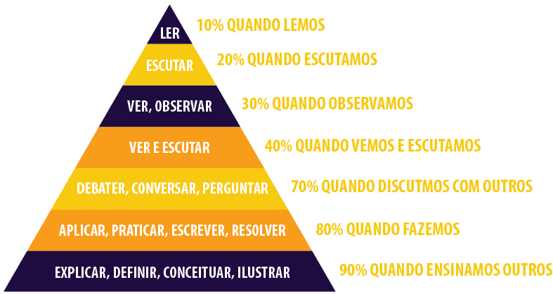

Aprendendo e construindo uma comunidade
Aplicando o aprendizado para que seja mais proveitoso para você e todos em sua volta.
calendar_today 28/09/2020 hourglass_empty 5 minutosPara conquistar a maior condecoração que um jovem pode receber no movimento escoteiro, a Insígnia de BP, é necessário, além de trilhar todos as competências do ramo, fazer um projeto relevante que impacte a sociedade. Escolhi como tema de meus estudos o Aprendizado a Distância dentro do Movimento Escoteiro, para saber mais clique aqui, pensando em poder ser pela primeira vez exercer uma função ativa descobri que o processo de aprendizagem é muito mais que um processo de mão dupla em um ambiente fechado.
O aprender dentro do escotismo
O escotismo já existe a mais de 100 anos e já passou por algumas mudanças, até chegar na abrangência pedagógica abordada por este atualmente, porém algo que sempre esteve presente no movimento é o "aprender fazendo", descrito pela organização da seguinte maneira:
" O aprender fazendo mostra a abordagem prática do Escotismo sobre a educação, como resultado da experiência direta em vez de apenas uma instrução teórica. Baseia-se no aprendizado através das oportunidades de experiências que surgem da busca por interesses e do lidar com a vida cotidiana. "
Desde pequeno o jovem é incentivado a praticar o conhecimento das maneiras mais variadas, o que em conjunto ao trabalho em equipe fazem as bases do método escoteiro que ao amadurecer, o jovem passa a ter conhecimento e autonomia de aplicar estes em suas atividades para os outros, completando enfim, o ciclo do aprender.
O ciclo do aprender
Como já disse, realizando o projeto ampliei meus olhares não só no aprendizado dentro do escoteiro mais de forma geral, e redigindo meu trabalho científico "Processos da implementação de ambientes virtuais de aprendizagem na sociedade digital", tive contato com estudos como a Pirâmide de William Glasser, que conecta o aprender ativo e principalmente o aprender ensinando como principal forma de retenção. Prática também exemplificada na fala de Atila Iamarino na sua palestra "Como aprender melhor" no evento TEDxUNESPBauru.
O contato, até então não compreendido, com esse ciclo no escotismo me fez refletir sobre a importância da manutenção deste, o aprender fazendo e o aprender ensinando como formas de não só de contenção, mas como um evento social.
Compartilhando dentro e fora das redes
Facebook, Instagram, Twitter são só alguns exemplos de onde compartilhamos, mas a proposta é continuar tal prática nas redes, desta vez de aprendizado, e não apenas aplicativos. A rede de aprendizado reciproca, aprender para ensinar e ensinar para aprender, compartilhar e atingir mais pessoas, criando um sentido comum entre vários indivíduos, ou por definição, uma comunidade, saudável e em crescimento constante.